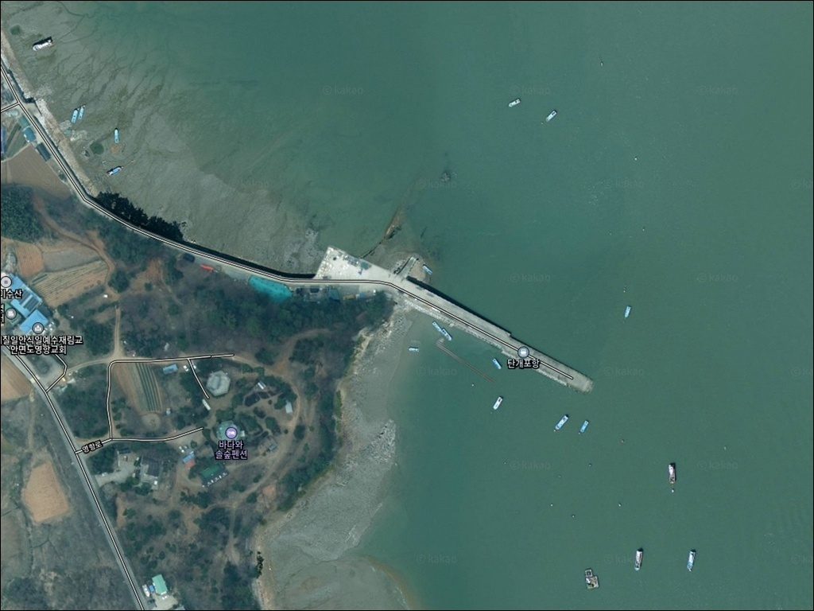
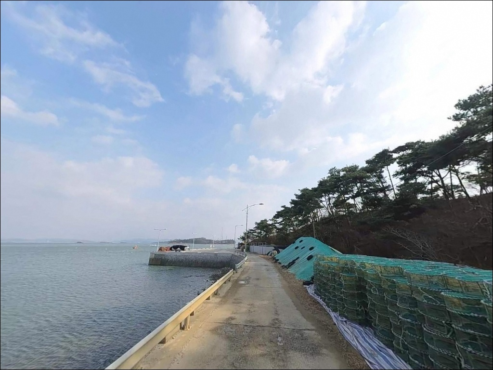
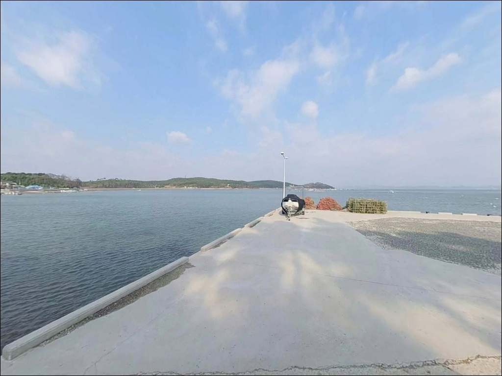
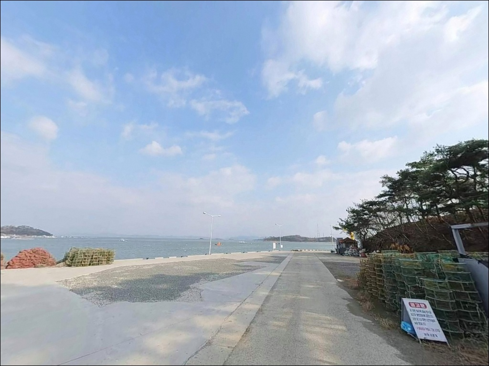
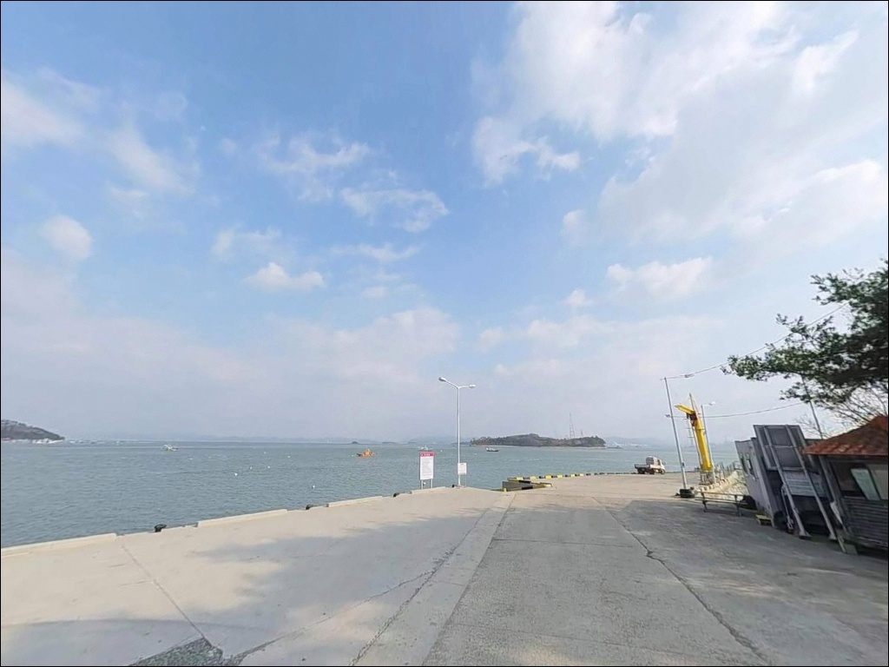
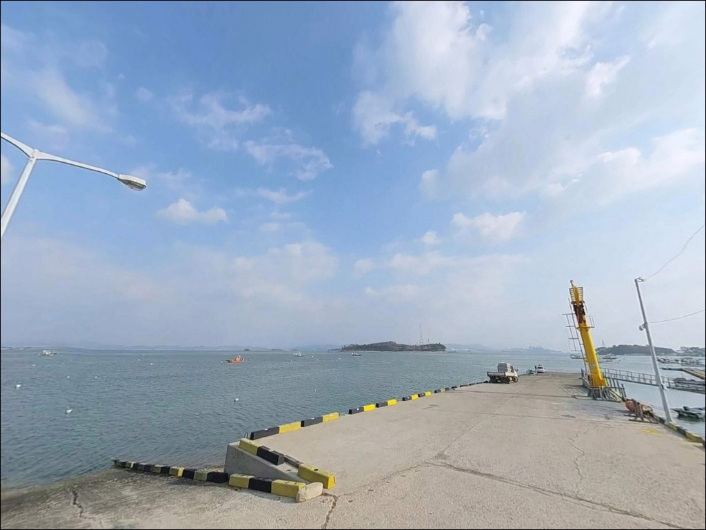
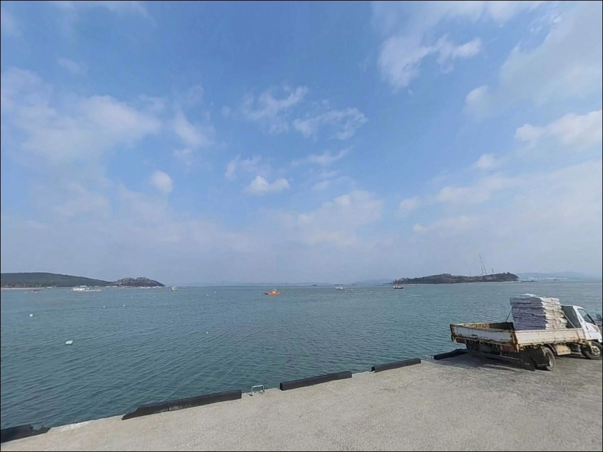
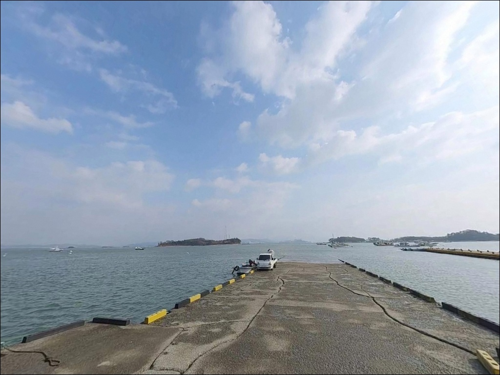
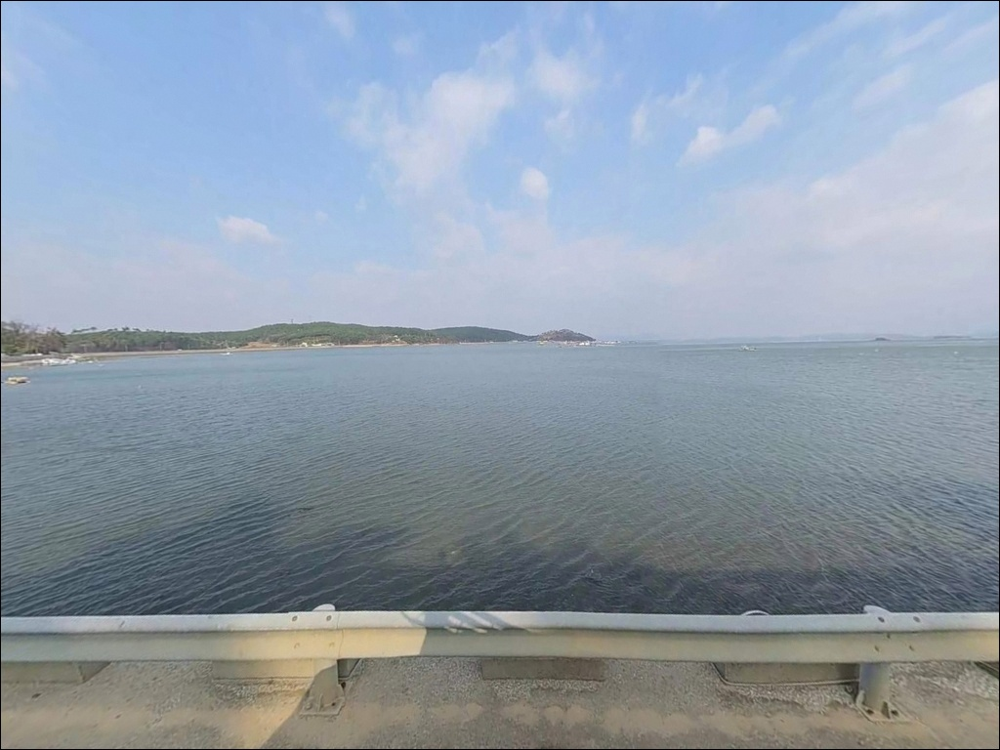

이 페이지에는 광고(제휴 링크 포함)가 있으며, 광고 링크를 통해 구매하면 운영자가 판매 수익 또는 수수료를 받을 수 있습니다. 포인트 사진: 카카오맵 스카이뷰·로드뷰. 이 페이지의 지도·사진 이미지는 카카오맵의 실제 서비스 이미지와 다를 수 있습니다.


탄개포항, 충남 태안군 바다와 가장 가까이 머무는 차박, 낚시 해안 명소
포인트 안내
탄개포항에서 가장 자주 하는 실수는
서해 물때를 확인하지 않고 진입하는 것입니다.
조류가 강한 타이밍에 도착하면
어떤 채비를 써도 포인트를 제대로 공략하기 어렵고,
빈 손 귀항으로 이어지는 경우가 많습니다.
탄개포항은 조류 흐름이 살아 있는 타이밍을
정확히 골라 들어오는 것이 조과의 기본 전제인
포인트입니다.
탄개포항
충남 태안군 고남면 고남리 190-20
안면도 최남단에 자리한 이 소형 선착장은
구매항과 영목항 사이에 위치하며,
서해 조류의 영향을 직접 받는 외해 노출 구조입니다.
규모는 작지만 가을철 주꾸미·갑오징어
워킹 루어 포인트로 낚시꾼 사이에서 알려진 곳입니다.
이 글은 탄개포항의
진입 동선, 낚시 여건, 차박 체류 조건,
대안 포인트 동선에 집중합니다.
조황 단정이나 특정 어종 보장은
이 글의 범위에 포함되지 않습니다.

1. 포인트 위치와 진입 동선 분석
탄개포항은 안면도 최남단,
영목항과 연접한 소형 어촌정주어항입니다.
고남면 마을 도로를 통해 진입하는 구조로,
선착장까지 이어지는 진입로는
폭이 좁아 서행이 필요한 구간이 있습니다.
초행이라면 출발 전 위성지도로
진입로 형태를 미리 확인하는 편이 안전합니다.
대형 SUV나 루프탑 장비를 얹은 차량이라면
선착장 진입 전 회차 공간 여부를 한 번 더 살펴야 합니다.
소형 어항 특성상 회차 여유가 크지 않을 수 있어,
후진 진출이 불편한 차량은
갓길 공간도 함께 확인해 두는 편이 좋습니다.
주차는 선착장 주변 공터나 도로 가장자리를
활용하는 방식이 일반적입니다.
소형 항 구조상 1~2대 수준의 공간이며,
어선 동선을 막지 않는 자리를 먼저 찾는 것이
기본 매너입니다.

2. 차박 환경과 야간 체류 여건
탄개포항 주변은 민가 밀집도가 낮고
차량 통행이 거의 없는 어촌 환경입니다.
야간에는 가로등이 제한적일 가능성이 높아
개인 조명 장비는 반드시 갖춰야 합니다.
프라이버시는 조용한 편이지만,
외해 노출 구조 특성상 북서풍 예보 시에는
바람의 영향을 직접 받을 수 있습니다.
소형 항 특성상 차박을 메인으로 삼기에는
주차 공간이 넉넉하지 않습니다.
낚시를 마치고 짧게 차에서 쉬었다 가는 용도로는
나쁘지 않지만, 장박 체류를 계획한다면
현장에서 주차 공간과 어민 시설 구역을
직접 확인한 뒤 판단하는 것이 현실적입니다.


3. 주변 편의시설 및 인프라 현황
탄개포항 자체에는
편의점·식당·화장실 등의 시설이 확인되지 않습니다.
편의시설 없는 소규모 어항에서는
완전 자급 체제로 진입하는 것이
기본 준비 방식입니다.
식수, 간식, 채비 소품, 연료 모두
출발 전에 준비해야 합니다.
가장 가까운 편의 거점은 바로 옆의 영목항 일대입니다.
안면도 남단의 주요 어항으로
기본 생활 인프라를 갖추고 있어,
부족한 소품이 있다면
영목항 쪽에 먼저 들러 해결하고
탄개포항으로 진입하는 동선이 효율적입니다.
응급 상황 발생 시
고남보건지소가 충남 태안군 고남면 옷점길 305에
위치해 있습니다.
가장 가까운 의료시설로 참고해 두시기 바랍니다.

4. 방문 전 반드시 확인해야 할 준비사항
탄개포항 방문 전 가장 먼저 확인해야 할 것은
물때입니다.
서해안 특성상 조석 간만 차가 크고,
사리 전후에는 조류가 빠르게 변합니다.
바다타임에서 고남리 기준 물때를 확인하고
조류가 완만해지는 정조 전후 타이밍을
출발 시각과 맞추는 것이 기본 전략입니다.
물양장·호안 석축 구간은 이끼나 해수 피막으로
미끄러울 수 있습니다.
야간에는 발판 상태가 보이지 않으므로
헤드랜턴은 필수이며,
구명조끼는 낮이든 야간이든 착용이 기본입니다.
바닥 지형 특성상 채비 손실 가능성이 있으니
여분 채비를 넉넉하게 준비하는 편이 좋습니다.
기상청 해상 예보는 출발 당일 아침에
한 번 더 확인하는 것이 포인트 낭비를 막는 조건입니다.
외해 노출 지형 특성상
기상 변화가 예보보다 빠른 경우가 있습니다.

5. 탄개포항에서 조류 타이밍이 조과를 결정하는 이유
탄개포항은 방파제 길이가 20m로 짧은 편이지만,
물양장 120m와 친수호안 117m를 포함하면
낚시가 가능한 석축·호안 구간이 상당히 길어집니다.
외해 쪽으로 직접 노출된 구조로,
서해 조류 흐름을 비교적 직접적으로 받는
회유성 어종의 길목이 되는 지형입니다.
바닥은 모래와 자갈이 혼합된 지형으로
완만하게 깊어지는 구조로 추정됩니다.
수심은 비교적 깊은 편이며
간조 때도 일정 수준 이상이 유지될 가능성이 있습니다.
항 입구 외측 구간에서는
조류가 흐르기 시작하는 타이밍에
입질 가능성이 높아지는 구조입니다.
반대로 사리 전후 조류가 너무 강한 타이밍에는
채비 컨트롤이 어려워집니다.
탄개포항은 조류 흐름이 살아 있는 타이밍을 골라
들어오는 것이 조과를 좌우하는 핵심입니다.
최신 조황은 가기 전에 꼭 검색해 보시기 바랍니다.


6. 탄개포항에 어울리는 낚시 스타일
이 포인트에서 가장 잘 맞는 방식은
가을철 주꾸미·갑오징어를 노리는 워킹 루어입니다.
바닥이 모래·자갈 혼합층이고 수심이 일정하게 유지되는
호안·물양장 구간은 에기나 봉돌 채비를
바닥층에서 운용하기에 적합한 조건입니다.
가을 두족류 시즌에 조류 타이밍을 맞추면
기대해볼 만한 구조입니다.
에깅도 병행할 수 있는 스타일입니다.
항 입구 외측 구간과 물양장 끝단 부근에서
갑오징어를 대상으로 에기를 운용하는 방식이 어울리며,
조류가 흐르기 시작하는 타이밍에
가장 반응이 살아나는 편입니다.
원투낚시는 서브 스타일로 가능합니다.
물양장 끝이나 호안에서 외측으로 던지는 방식으로,
정조 타이밍에 채비를 멀리 보내 바닥을 탐색합니다.
우럭·노래미·숭어 등 회유성 어종을
기대해볼 수 있는 구간입니다.

7. 대안 포인트와 플랜 B 동선
탄개포항이 기대에 못 미칠 때
가장 먼저 이동할 수 있는 곳은
바로 연접한 영목항입니다.
안면도 남단의 주요 거점 어항으로
방파제·선착장 연안낚시와 선상낚시 출조가
모두 가능한 규모를 갖추고 있습니다.
주꾸미·갑오징어 시즌에 선상 출조가 활발한 곳이라,
탄개포항과 묶어 하루 일정을 짜기에 좋은 구조입니다.
영목항보다 조용한 환경을 원한다면
구매항을 대안으로 고려해볼 만합니다.
탄개포항 북쪽에 위치한 어항으로
선상·바위낚시 등 다양한 낚시 형태가 가능합니다.
좌대낚시 운영 이력도 있어
방식을 바꿔 출조하고 싶을 때 활용할 수 있습니다.
차박 공간이 탄개포항에서 여의치 않은 경우에는
영목항 주차 구역이 현실적인 대안입니다.
편의시설이 갖춰진 영목항 일대에서 하룻밤 머물고
이른 아침 탄개포항으로 이동해 낚시하는 동선도
효율적인 방식입니다.

작은 항이지만,
조류 타이밍이 맞으면 탄개포항은 달라 보입니다
가을철 주꾸미·갑오징어를 노리는 낚시꾼이라면
탄개포항의 지형 조건은 나쁘지 않습니다.
물양장·친수호안을 합산한 낚시 가능 구간이 길고,
외해 직접 노출 구조로 조류를 잘 받는 편입니다.
온라인에 개별 포인트 정보가 많지 않아
직접 발품을 팔아야 하는 탐험형 포인트이기도 합니다.
반면 편의시설이 전혀 없는 소형 항이라
완전 자급 체제 없이 방문하면 불편함이 큽니다.
물때 계산 없이 들어가거나
진입로 사전 확인 없이 대형 차량으로 접근하면
낭패를 보기 쉬운 구조입니다.
물때 확인, 자급 준비, 진입로 점검,
이 세 가지를 갖추고 간다면
영목항과 묶어 안면도 남단에서
기억에 남는 출조가 될 수 있는 곳입니다.
편의시설 없는 조용한 어촌 항에서
조류 흐름 옆에 자리를 깔고 차박까지 겸하고 싶다면,
현장에서 주차 공간과 어민 구역을 먼저 확인한 뒤
낚시와 하룻밤 체류를 함께 계획해 볼 수 있는 포인트입니다.